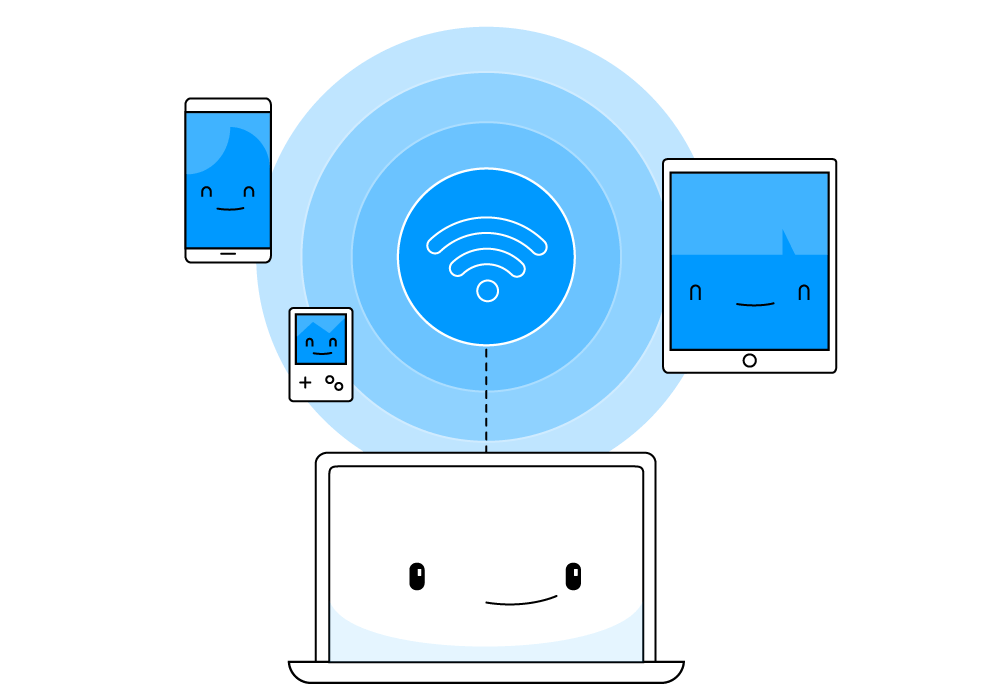

Topic 1. Network Fundamentals
The Social Web We Weave

Think of networking as the ultimate social gathering for your devices your computer, printer, game console they're all part of the digital clique, chatting away through invisible threads of technology.
Ever wondered how your laptop connects to your printer or how your smart home gadgets share secrets seamlessly? It's all thanks to networking, the social glue of the digital world. Imagine your devices throwing a virtual party, and networking is the language they use to mingle, share, and make your digital life effortlessly connected.
Let's dive into the world of Networking Fundamentals, where the tech-savvy socialite in your devices comes to life.
Understanding Networks and its Benefits
A network is a connection between two or more computers facilitated by both software and hardware, allowing communication.
Each connected device, be it a computer, peripheral (e.g., printer), or network device (e.g., router), is considered a node.
Benefits of Networks
|

|
Internet Connection Sharing: Networks with wireless Internet enable connectivity for "smart" home devices and provide wireless Internet access for laptops and portable devices. |
|
|
Peripheral Sharing: Networks allow direct printing from devices to shared printers, eliminating the need for file transfers or physical connections. |
|
|
File Sharing: In businesses, files can be seamlessly shared between networked computers, and home users can utilize sharing options in operating systems or cloud services for file sharing. |
|
|
Online Gaming and Home Entertainment: Many computer games offer multiplayer modes, and entertainment devices like Smart TVs and music systems can connect through wired or wireless networks. |
|
|
Voice over IP (VoIP): VoIP services enable making and receiving phone calls over the Internet through the home network, expanding communication capabilities. |
Network Administration
Network administration aims to manage, monitor, maintain, secure, and service an organization’s network. Administering a network involves tasks such as installing new computers, monitoring
network performance, updating software, and configuring security settings.
Monitoring Network Performance
Monitoring network performance is crucial for ensuring a smooth and efficient operation. Two key metrics to understand in this context are bandwidth and throughput.
1. Bandwidth (Data Transfer Rate): The maximum speed for sending data in a network, usually measured in bits per second (bps) or megabits per second (Mbps). Monitoring: Utilize network monitoring tools to gain real-time insights into the data flow through the network infrastructure.
2. Throughput: The actual speed achieved, always equal to or less than the data transfer rate, measuring the effective performance of the network. Monitoring: Conduct performance tests between network points to monitor throughput. Compare it with available bandwidth to identify potential bottlenecks.
Updating Software
Keeping software up-to-date is critical for security, stability, and performance of a network. Here's a general guide on updating software:
1. Identify Software: Keep a comprehensive inventory of all software applications and systems in your network.
2. Check for Updates: Regularly check the official websites or repositories of the software vendors for updates and patches.
3. Automate Updates: Utilize automated patch management tools to streamline the update process. This helps ensure that critical updates are applied promptly.
4. Test Updates: Before deploying updates across the entire network, test them in a controlled environment to identify and mitigate any potential issues.
5. Scheduled Maintenance: Plan and schedule routine maintenance windows during off-peak hours to minimize disruption.
Configuring Security Settings
Configuring security settings is fundamental for protecting your network from unauthorized access and potential threats. Here's a basic guide:
1. Firewall Configuration: Implement and configure firewalls to control incoming and outgoing network traffic. Define rules based on the principle of least privilege.
2. Access Controls: Establish user accounts with strong, unique passwords. Implement role-based access controls (RBAC) to restrict access to sensitive resources.
3. Encryption: Use encryption protocols such as SSL/TLS for data in transit and implement disk encryption for data at rest.
4. Update Security Policies: Regularly review and update security policies to address emerging threats and vulnerabilities. Educate users on security best practices.
5. Intrusion Detection and Prevention Systems (IDPS): Deploy IDPS tools to monitor and respond to potential security incidents in real-time.
6. Regular Audits:Conduct regular security audits and vulnerability assessments to identify and address potential weaknesses.

REMEMBER!
Efficiently overseeing network performance, maintaining up-to-date software, and configuring strong security settings are essential for administrators to guarantee the stability, reliability, and security of their networks. A solid grasp of network fundamentals is vital for facilitating smooth device communication, seamless file sharing, and reliable online connectivity. Distinguishing between bandwidth and throughput empowers you to optimize network usage to its fullest capacity and implement measures for effective utilization. Developing these skills equips individuals to adapt to emerging technologies and contribute to the sustained success of their network infrastructure.